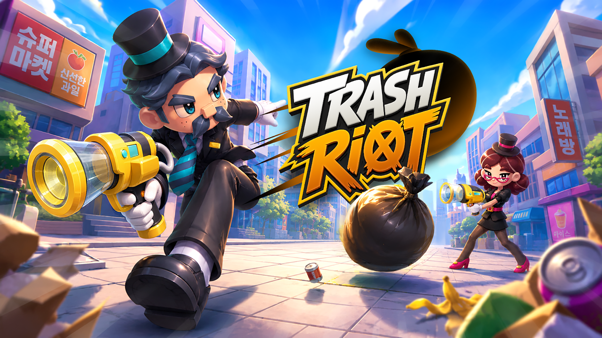
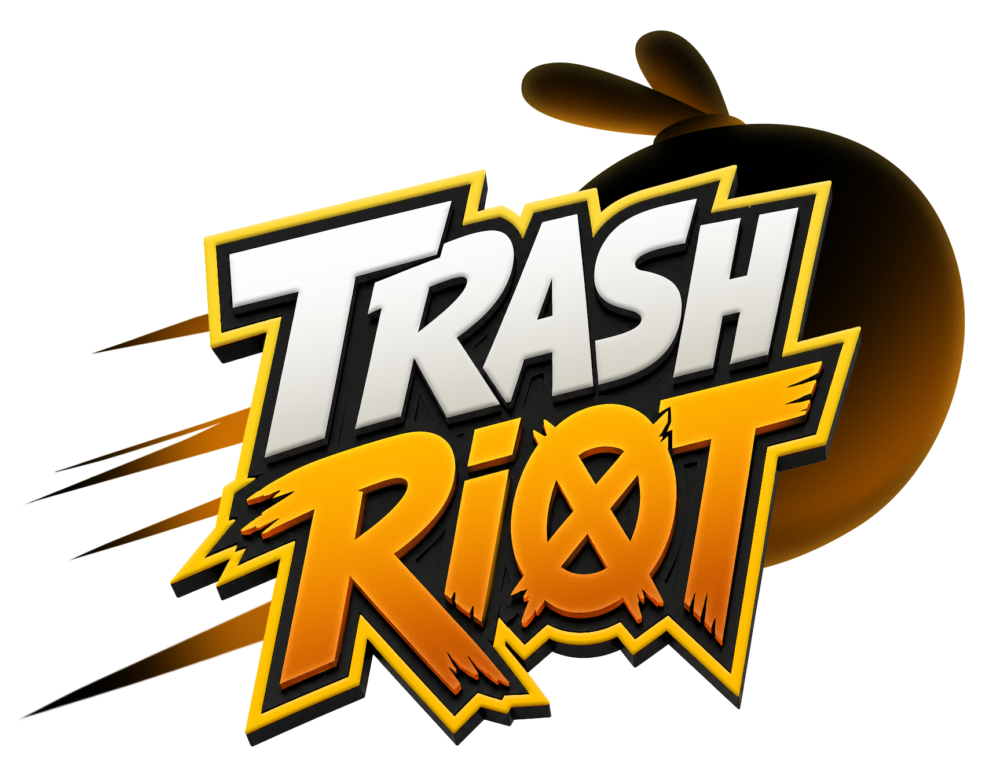

쓰레기 수거
도시 곳곳에 널린 쓰레기를 빠르게 모으세요. 아이템도 활용할 수 있어요.

2026 · IN DEVELOPMENT
쓰레기를 떠넘겨라.
보상금을 차지하라!
두 악덕 시장이 펼치는 기상천외한 쓰레기 전쟁! TRASH RIOT에서 친구와 한판 승부를 벌여보세요.
01 / ABOUT
정부가 깨끗한 도시에 보상금을 준다고 발표하자, 악덕 시장들은 엉뚱한 계획을 세웠습니다.
우리 도시의 쓰레기를
옆 도시로 던져버리면 되잖아?!
쓰레기를 수거하고 상대 도시에 투척하거나 소각해 청결도와 재화를 관리하세요. 정부 평가에서 더 많은 보상금을 확보하는 시장이 승리합니다!
02 / HOW TO PLAY
간단하지만 절대 평범하지 않은 시장들의 싸움!
도시 곳곳에 널린 쓰레기를 빠르게 모으세요. 아이템도 활용할 수 있어요.
쓰레기를 던져 상대 도시를 어지럽히고 재화를 획득하세요.
모은 쓰레기를 소각해 도시 청결도를 회복하세요. 분리수거에도 도전!
도시의 청결도를 관리하고 보상금 경쟁에서 이기세요.
03 / GAME MODES
전략적으로 플레이하거나, 완전히 난장판을 만들어보세요.
수거, 투척, 소각, 평가를 활용해 재화와 청결도를 관리하는 전략 승부!
전략 & 심리전특별한 능력과 예측할 수 없는 돌발상황으로 전장이 뒤집히는 유쾌한 난투!
특수 능력 & 돌발상황※ 소개된 콘텐츠는 개발 상황에 따라 변경될 수 있습니다.
04 / OFFICIAL VIDEOS
악덕 시장들의 쓰레기 전쟁을 영상으로 만나보세요. 재생 버튼을 누르면 영상이 로드됩니다.
정부의 청결 보상 제도와 두 악덕 시장이 벌이는 기상천외한 쓰레기 전쟁!
쓰레기 투척, 소각, 분리수거와 정부 평가까지! 실제 플레이를 자세히 소개합니다.
* 영상은 자동 재생되지 않으며, 재생을 선택한 영상만 불러옵니다. 모바일에서는 데이터 사용량에 유의해 주세요.
05 / GAMEPLAY
실제 게임 플레이 화면 8장을 만나보세요. 사진을 누르면 크게 볼 수 있어요!
모바일에서는 옆으로 밀어보세요
* 개발 중인 게임 화면으로, 최종 출시 버전과 일부 다를 수 있습니다.

CURRENTLY IN DEVELOPMENT
《Trash Riot》은 현재 개발 중입니다.
최신 게임 소식은 공식 SNS에서 확인해 주세요.
06 / OUR TEAM
구미대학교 비주얼게임컨텐츠스쿨 졸업작품 프로젝트